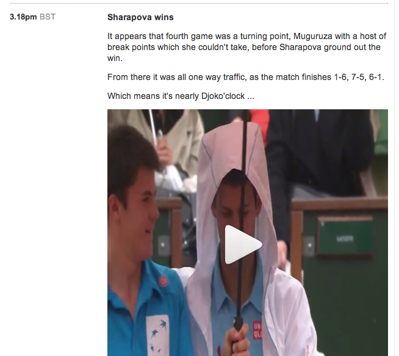

Embeds In Media
Andy Pellett, Art Gibson, Embedly
@anrope, @artgibby, @embedly
Hacking Journalism 2014
Embeds, Analytics, Mobile!
Users expect embeds, thanks Facebook!
Now everyone does it...
Buzzfeed

Embeds in Journalism
The Guardian Liveblog
Immersive Stories - NYTimes
Curated Stories - Storify
Realtime Reporting
Twitter has made this easy, but still has room to improve
discussion points: twitter has done a lot for this, unmoderated, free for all, lots of noise (being able to manage these types of events and surface important content) taking videos and photos from everyday people or on the spot examples: sfo plane crash, boston marathon chase, moncton shootings http://www.ctvnews.ca/canada/moncton-woman-live-tweets-arrest-of-shooting-suspect-1.1855958
Analytics and Attention
Reddit - Video Heatmaps
discussion points: Seeing the heat map of where people watched a video is interesting (demo the heat map on the video) 2 videos that has spikes where the video is interesting (Insert screenshots and video)


Thanks!
Demos and Questions
We are happy to riff on ideas during the hackathon
art@embed.ly, andy@embed.ly, @anrope, @artgibby